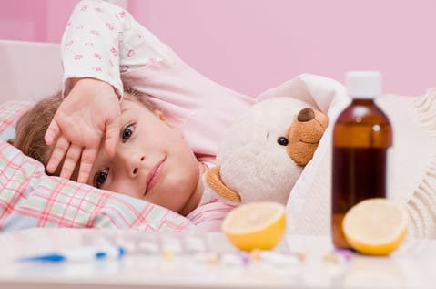
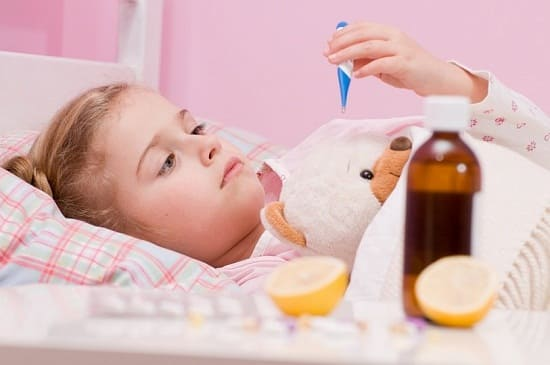
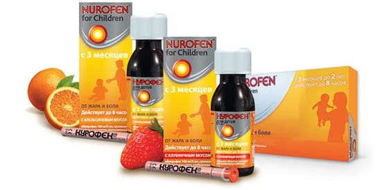

Ваш подвижный четырехлетний ребенок не похож на себя последние пару часов. У него насморк, и он подкашливает. Затем он начинает жаловаться на головную боль и боль в горле. Потом все его тело начинает болеть, и он хочет полежать. Вы измеряете его температуру, а она равна 39, 7°С и выше! Кашель становится сильнее, ребенка тошнит. Существует только одна причина, которая может вызвать такое изобилие симптомов, – это грипп.
СИМПТОМЫ
Когда ребенок заболевает, родителей больше всего волнует, грипп это или обычное ОРЗ. Признаки гриппа, которые действительно характеризуют его, - это выраженные головные боли, лихорадка, чувство общей болезненности (ломоты), слабости. Грипп, как правило, характеризуют три или более (или все) из нижеперечисленных симптомов:
• высокая температура, озноб;
• боль в горле;
• тошнота;
• рвота;
• диарея;
• боль в животе;
• мышечные боли;
• заложенность носа;
• насморк — прозрачная или зеленая слизь;
• кашель - сухой или мокрый;
• раздраженные, красные глаза.

ЧТО ВЫ МОЖЕТЕ СДЕЛАТЬ
Если вы считаете, что у вашего ребенка грипп, первый шаг – расслабиться. Грипп – это вирус, поэтому не нужно сломя голову лететь к врачу, чтобы он выписал антибиотики. Советы по лечению таких симптомов, как кашель, озноб, рвота, диарея, лихорадка и «красные глаза» (конъюнктивит), вы найдете в соответствующих разделах.
Вот несколько общих рекомендаций, которые помогут вам и вашему ребенку справиться с болезнью:
Пейте много жидкости. Поддержание водного баланса способствует выведению слизи, что помогает избежать инфекции уха и пазух. Это так способствует уменьшению болей, лихорадки и общего чувства болезни.
Мультисимптомное средство от простуды. Давайте детям старше 6 лет лекарство от простуды (например, Тамифлю), которое помогает облегчить несколько из основных симптомов, таких как головные боли, заложенный нос, кашель и лихорадка. Но это универсальное лекарство, как правило, слишком сильнодействующее для детей младше 6 лет.
СОВЕТ ДОКТОРОВ СИРС: СВИНОЙ ГРИПП В 2009 году мир был поражен новой удивительной разновидностью гриппа, названной H1N1, или «свиной грипп». Хотя вспышка сразу вызвала массовую необоснованную панику, мы вскоре осознали, что он немногим серьезнее обычного гриппа. Некоторые группы людей (беременные женщины, дети и подростки) переносили заболевание тяжелее, чем обычный грипп, а пожилых людей он, по большей части, вообще обошел стороной. Эта вспышка произошла «не в сезон», вместо обычных осени или зимы. Когда наша нация и мир приобретут иммунитет к этой разновидности (через инфекцию или вакцинацию), грипп H1N1, скорее всего, ничем не будет отличаться от обычного сезонного гриппа. |
Лечение специфических симптомов. Вместо мультисимптомного средства можно лечить самые беспокоящие симптомы более специфическим медицинским препаратом, таким, как обезболивающее при лихорадке и болях (нурофен или ибупрофен). При характерных для гриппа болях и ломоте ибупрофен зачастую эффективнее ацетаминофена.

Используйте противоотечные и отхаркивающие препараты при заложенности носа и груди. Поскольку безопасность безрецептурных препаратов против простуды и кашля для детей младше 6 лет сейчас обсуждается, мы не рекомендуем вам их использовать. Препарат на основе трав под названием «Синупрет» — отличная помощь носовым пазухам и дыхательной системе взрослых и детей при простуде или гриппе.
Больше отдыхайте. Нет лучших лекарств для тела, чем хороший ночной сон и спокойный день. Иногда давать ребенку лекарства в течение дня (чтобы он чувствовал себя как обычно, бегал и играл) нецелесообразно и приводит к обратным результатам. Сократите употребление медикаментов днем (если малыш чувствует себя более-менее комфортно) и дайте ему больше отдыхать, используя необходимые лекарства ночью.
СОВЕТ ДОКТОРОВ СИРС: ЭТО ГРИПП ИЛИ МЕНИНГИТ? Иногда менингит принимают за грипп и наоборот. Оба могут вызывать высокую лихорадку, головную боль и рвоту. Основной симптом, который помогает различать их, — ригидный, болезненный затылок, сопровождающий менингит. Если ваш ребенок жалуется на это и не может посмотреть на свой живот без сильных болей, отправляйтесь на станцию «Скорой помощи» или сразу же звоните своему врачу. |
КОГДА ОБРАЩАТЬСЯ К ВРАЧУ
Большинство детей с гриппом даже не нуждаются в консультации врача, но некоторых необходимо осмотреть. Вот несколько советов, которые помогут вам оценить необходимость визита к врачу:
• лихорадка у вашего ребенка держится более 2 дней. И хотя это еще может быть просто грипп, лучше лишний раз проконсультироваться с врачом;
• у вашего ребенка наблюдается умеренное или сильное обезвоживание от рвоты или диареи;
• вы «нутром чувствуете», что в ребенок болеет необычно;
• у вашего ребенка сильный кашель с болями в грудной клетке и одышка. Это может означать начинающееся воспаление легких (пневмонию).
Прописывание антивирусных препаратов. Ваш врач может назначить антивирусный препарат, который поможет победить грипп. Эти препараты действуют на вирус гриппа «как антибиотики». Они делают две вещи: уменьшают продолжительность заболевания и облегчают симптомы. Для лучшей эффективности их нужно начинать принимать с момента начала заболевания. Обычно их назначают только детям старше 12 лет.
Здоровье ребенка от докторов Сирс / Сирс У. и др.